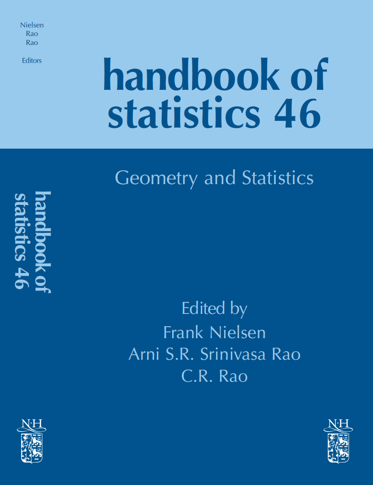

Handbook of statistics: Geometry and Statistics (Volume 46)
Elsevier
by Frank Nielsen, Arni S.R. Srinivasa Rao, C.R. Rao (Editors)
July 2022
Editor home page

11 chapters organized into three parts.
- Part I: Foundations in Classical Geometry and Analysis
(3 chapters)
- Geometry, Information and Complex Bundles
by Arni S.R. Srinivasa Rao and Steven G. Krantz
- Geometric Methods for Sampling, Optimisation, Inference and Adaptive Agents
by Alessandro Barp, Lancelot Da Cost, Guilherme Franca Karl Friston, Mark Girolami, Michael I. Jordan, and Grigorios A. Pavliotis
- Equivalence Relations and Inference for Sparse Markov Models
by Donald E.K. Martin, Iris Bennett, Tuhin Majumder, and Soumendra Nath Lahiri
- Part II: Information Geometry (4 chapters)
- Symplectic Theory of Heat and Information Geometry
by Frédéric Barbaresco
- Unifying Framework for Some Directed Distances in Statistics
Michel Broniatowski and Wolfgang Stummer
- The analytic dually flat space of the mixture family of two prescribed distinct Cauchy distributions
by Frank Nielsen
- Local Measurements of Non-linear Embeddings with Information Geometry
by Ke Sun
- Part III: Advanced Geometrical Intuition and
Analysis (4 chapters)
- Parallel transport, a central tool in geometric statistics for computational anatomy.
Application to cardiac motion modelling
by Nicolas Guigui and Xavier Pennec
- Geometry and Mixture Models
by Paul Marriott
- Gaussian distributions on Riemannian symmetric spaces of non-positive curvature
by Salem Said, Cyrus Mostajeran, and Simon Heuveline
- Multilevel contours on bundles of complex planes
by Arni S.R. Srinivasa Rao
Last updated, April 2022.